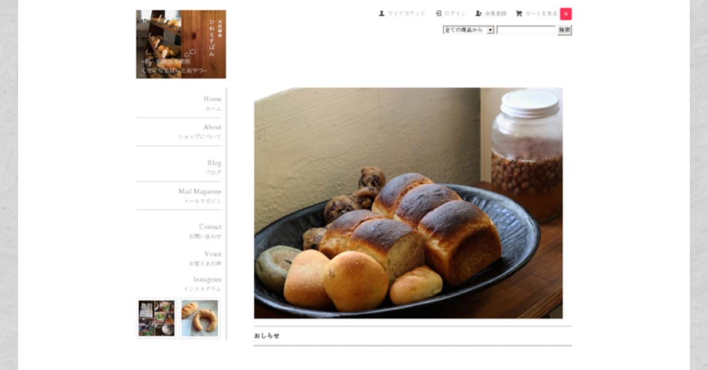

奈良に暮らす、39歳のフリーランスです。
これまで「言葉」を使った仕事を中心に活動してきましたが、現在はAIフルスタックエンジニアを目指して、新たな学びに取り組んでいます。
p>きっかけは、福祉分野での実体験。制度や情報が複雑で届きにくい現状に対し、テクノロジーの力で誰かの「困った」を少しでも減らせたら——そんな想いから、コードを書き始めました。
現在はHTML/CSSを入り口に、Webアプリ開発やAIの基礎を少しずつ積み重ねています。
もともとはフリーライターとして、商品紹介やサービス案内の文章、チラシのコピー制作、個人のブランディングサポートなどを手がけてきました。
「その人らしさ」や「自然体の魅力」を言葉で伝えることが得意です。
これまでの実績には、通信会社のテレオペ業務でアップセル表彰を受けたことや、サプリメントOEM事業で月商1,000万円を達成した経験があります。
また、フリーランス向けに「0→1」のブランディングコンサルを行っていた時期もありました。
知人のパン屋さんのネットショップ制作では、素朴で温かな世界観を大切にしながら、Instagramウィジェットを組み込み、サイトに動きを加える工夫を施しました。
その結果、カラーミー大賞にノミネートされたのは、今でも心に残る出来事です。
これからは、「ことば」と「テクノロジー」の両方の視点を活かし、福祉や教育などの分野で役に立てる存在を目指していきます。
日々の学びや気づきは、NOTEでも綴っています。
ご興味があれば、ぜひのぞいてみてください。
2016年カラーミー大賞ノミネート（キャプチャー）
以下のボタンからお気軽にご連絡ください。
Googleフォームで問い合わせるまたは、Xでもどうぞ！
@makoto39restart